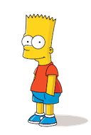
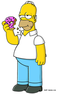
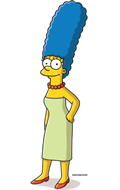

Wwelcome to Jonathan's TECH 272 Midterm
Text
In this class, I learned how to...
- Create an HTML web page, where I can
- change the size of my font.
- change the color of my font.
- change my font style to italic.
Tables
I also learned how to make an HTML table. Check out this table of the Simpson images below.
| The Simpsons |
| Bart |
Homer |
Marge |
Lisa |
|  |
 |
|
 |
I can also make my images clickable! Click on the image of Homer and it will take you to the Dunkin Donuts website.
Links
- Here is an example of a relative link to an image of Bart in a folder. Relative links are best used when you want to navigate around your own site.
- Here is an example of an absolute link to Dunkin Donuts. Absolute links are best used when you want to go to another webpage because it opens a new tab.
- The named anchor takes you to the top of this page. Named anchors are best used when creating navigation menus, notes, references and other internal links (glossaries and table of contents as well.)
I also learned how to make three types of lists. Below is an example of a definition list.
- Margins
- Did you notice that my document has margins? If you take a look at the code for this document, you will see the CSS for add margins to my documents.
{kind=link}